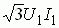

3. РАБОЧИЕ ХАРАКТЕРИСТИКИ АД
Эксплуатационные свойства асинхронного двигателя можно оценить по рабочим характеристикам, которые изображаются кривыми, выражающими графические зависимости от полезной мощности Р2 величин: тока I1 в обмотке статора, КПД η, скольжения S, коэффициента мощности cosφ, полезного момента M на валу АД при U1 = const и f1 = const (рис. 19.6). Их определяют экспериментально или путём расчёта, используя схему замещения асинхронного двигателя.

При холостом ходе мощность Р2 = 0; при этом токи обмоток статора I0, создающие вращающее магнитное поле, довольно велики и составляют 30…50% номинальных токов I1н. Частота вращения ротора n20 = (0,995…0,998) n1.
По мере роста нагрузки на валу ток статора увеличивается, как и активные мощности Р2 и Р1. В свою очередь, увеличивается коэффициент мощности cosφ. При этом скольжение S увеличивается, а частота вращения вала n2 уменьшается, поскольку это единственная причина увеличения тока и вращающего электромагнитного момента.
Зависимость М = f(Р2) определяется формулой М = 9550Р2/n2, из которой следует, что эта зависимость представляет несколько искривленную прямую, проходящую через начало координат, т. к. с увеличением нагрузки на валу частота вращения ротора АД несколько уменьшается.
Характер зависимости коэффициента мощности АД от мощности на валу, т. е. cosφ = f(Р2), определяется выражением cosφ = Р1/ и равен 0,8...0,9 для нормальных АД средней мощности при номинальной нагрузке. С уменьшением нагрузки на валу cosφ снижается и доходит до значений 0,1...0,3 при холостом ходе. В этом режиме полезная мощность на валу равна нулю, однако двигатель потребляет мощность из сети, поэтому cosφ0 здесь не равен нулю.
Характеристика коэффициента полезного действия η = f(Р2) АД нарастает очень быстро от нуля (холостой ход) до 0,3...0,4 номинальной нагрузки и достигает наибольшего значения (0,8…0,95) в пределах от 0,7 до 0,8 номинальной нагрузки, а затем медленно падает вследствие роста переменных потерь (см. рис. 19.6).